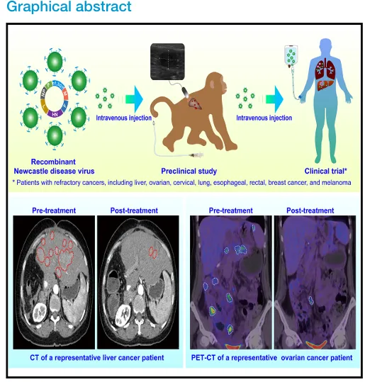
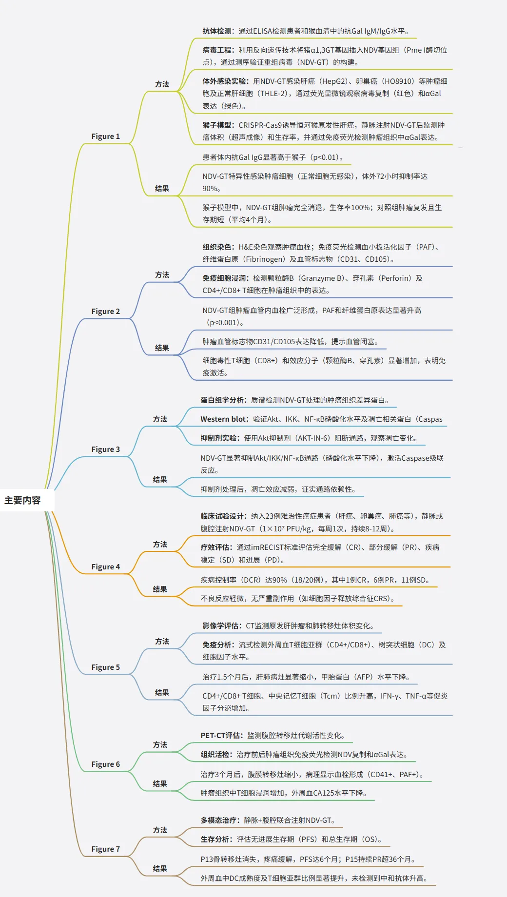
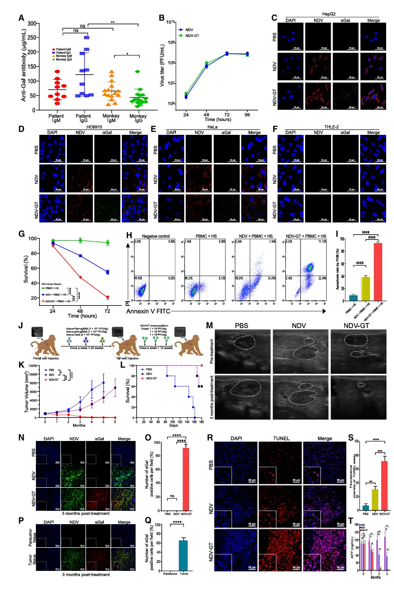
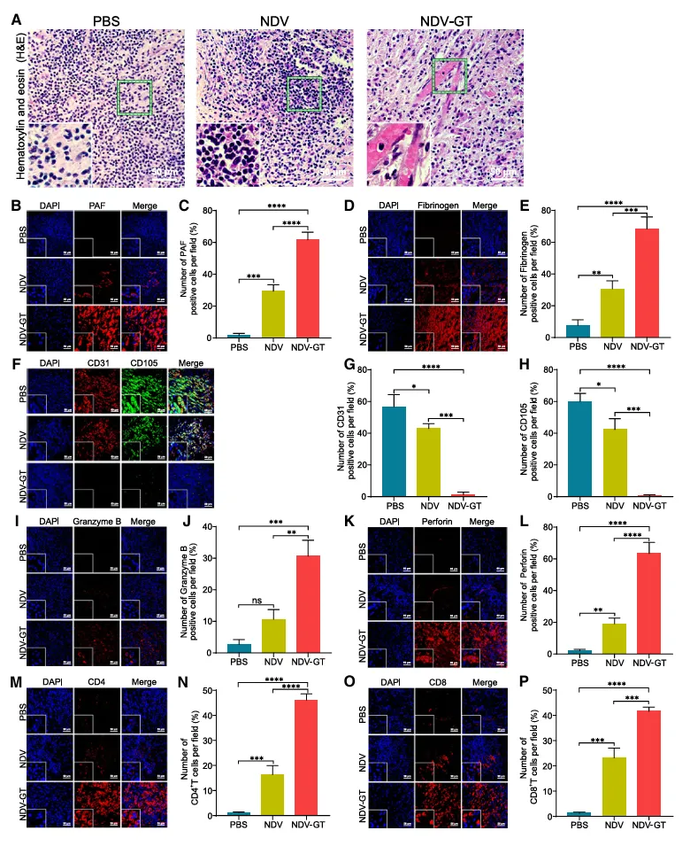
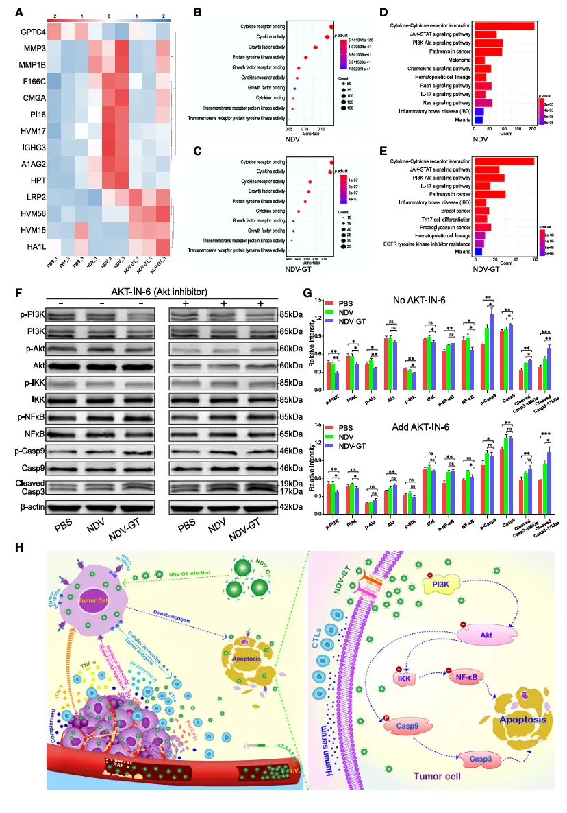
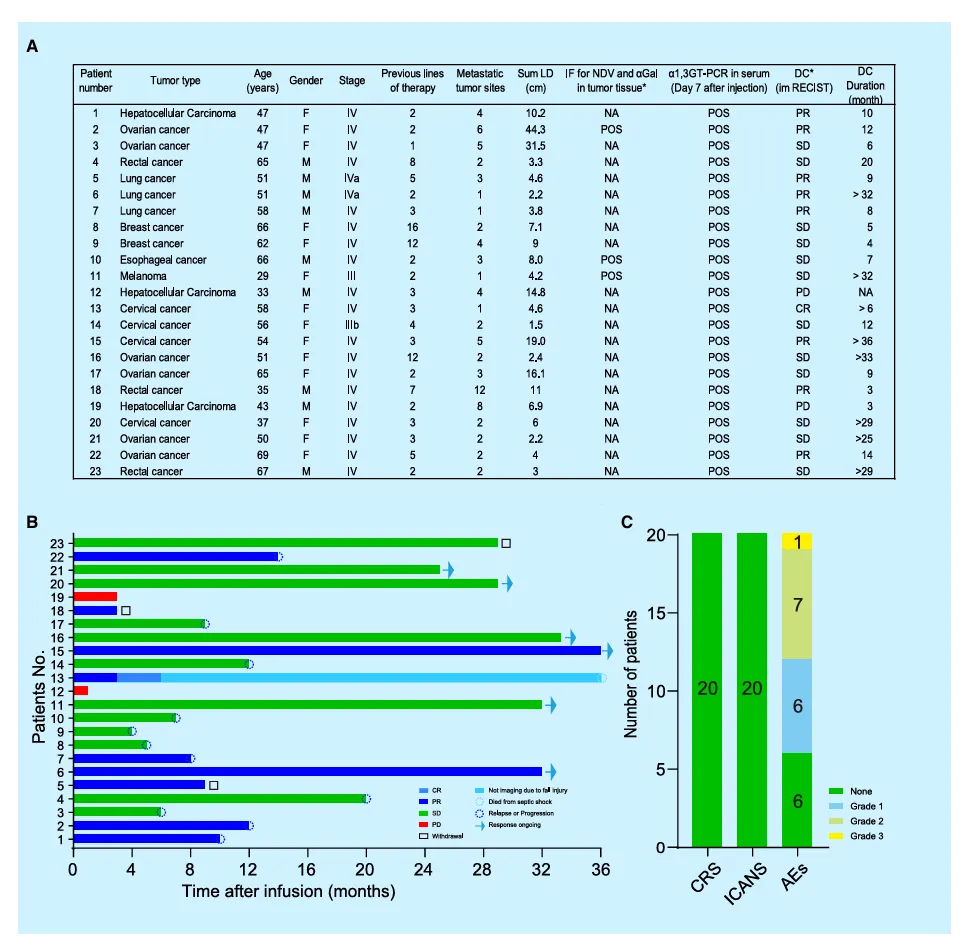
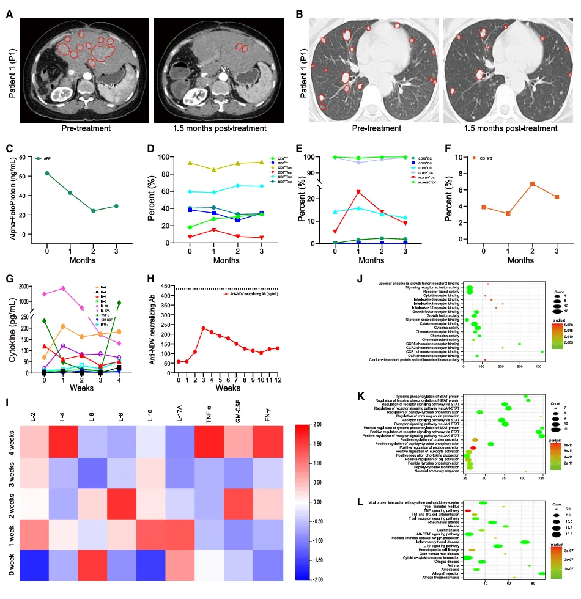
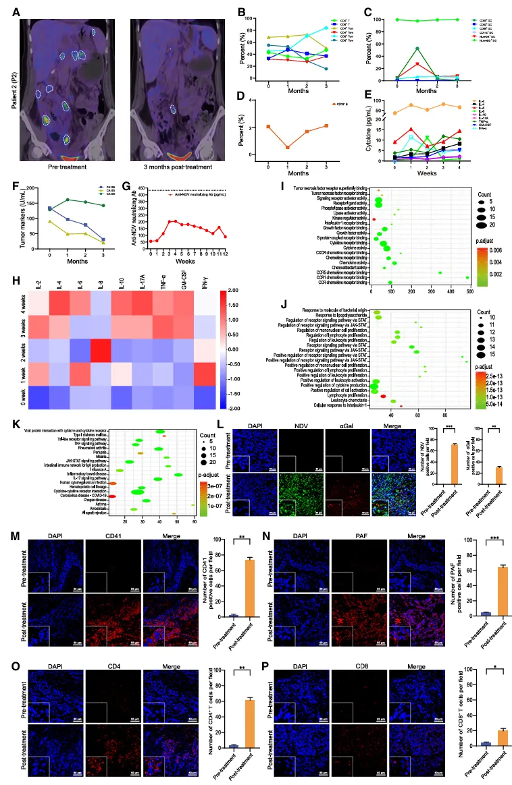
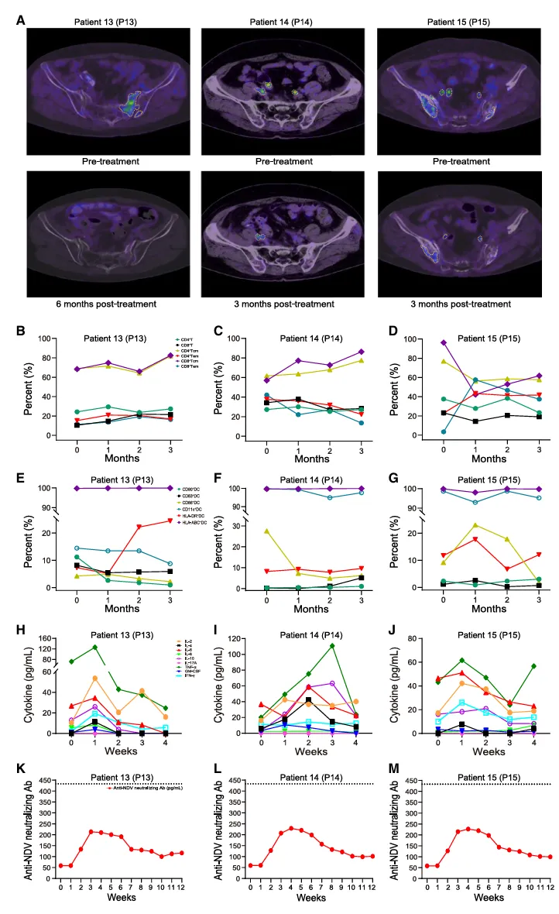

25年《Cell》:NDV-GT实现90%实体肿瘤控制率
原文：https://mp.weixin.qq.com/s?__biz=MzAwMzIzOTk5OQ==&mid=2247529398&idx=1&sn=b2de52e0a6fd435a212369d9c5a48ed5&chksm=9b3c0ae6ac4b83f0533826b174d403e06c06bc252567d5c9b0cbbdb0d693be19323724d30951#rd 合集：文献速递
一、写在前面
本次分享于2025年2月发表于顶级期刊《Cell》（最新影响因子45.5）题为"Hyperacute rejection-engineered oncolytic virus for interventional clinical trial in refractory cancer patients"的文章。这几乎是一项"纯湿"的工作，由广西医科大学团队领衔，联合中南大学湘雅二医院、复旦大学附属肿瘤医院等多家机构共同完成。研究团队创新性开发出携带猪源α1,3半乳糖基转移酶基因的重组新城疫病毒（NDV-GT），首次将异种器官移植中的超急性排斥反应机制反向应用于肿瘤治疗。通过CRISPR食蟹猴肝癌模型验证其双重抗肿瘤机制（直接溶瘤+αGal触发的免疫级联反应），并在23例晚期难治性实体瘤患者中取得90%疾病控制率，为溶瘤病毒疗法的临床转化提供了全新范式。看来常态化实验学习还得继续整，湿式验搞起来！

图形摘要如果需要数据分析指导 、生信热点全文复现 、自测数据个性化分析 辅导、常态化实验学习，欢迎联系客服微信[Biomamba_zhushou]**二、主要结果 **

1、患者和食蟹猴体内抗半乳糖抗体（预先存在的天然抗体）的测定在所有患者和食蟹猴体内均检测到了抗半乳糖的 IgM 和 IgG 抗体。患者和食蟹猴体内的抗半乳糖 IgM 抗体水平未观察到显著差异，然而患者体内的 IgG 抗体水平高于食蟹猴（p<0.01）。在患者体内，抗半乳糖 IgG 抗体水平与 IgM 抗体水平相比无显著差异（p>0.05），但在食蟹猴体内，IgG 抗体水平显著低于 IgM 抗体水平（p<0.05）（图 1A；表 S1） 。 2、重组 NDV-GT的构建①. 精准基因编辑
-
基因插入策略：通过反向遗传学技术，将猪源α1,3GT基因精准插入新城疫病毒（NDV）基因组的Pme I限制性酶切位点（图S1A），最大程度保留病毒原有复制能力。
-
功能验证：经PCR扩增（图S1B）和双端测序（图S1C-D）确认基因插入完整性，病毒滴度实验显示NDV-GT复制能力与野生型NDV无显著差异（图1B）。
②. 肿瘤特异性靶向验证
体外模型筛选：在8种肿瘤细胞（肝癌HepG2、卵巢癌HO8910等）和7种正常细胞（肝细胞THLE-2、内皮细胞HUVEC等）中测试：
-
双荧光示踪：红色荧光（NDV衣壳蛋白）与绿色荧光（αGal抗原）共定位显示，NDV-GT特异性感染肿瘤细胞（图1C-E），正常细胞几乎无感染信号（图1F/S2A-M）
-
感染效率梯度：MOI=1时，肝癌细胞感染率达89%，正常肝细胞<0.3%
③. 溶瘤效能显著提升
-
增殖抑制：NDV-GT对HepG2细胞的72小时抑制率达90%，较亲本NDV提高1.7倍（图1G/S3C-H）
-
凋亡诱导：流式检测显示NDV-GT组晚期凋亡细胞比例达68.3%（亲本NDV组38.5%，图1H-I）
-
广谱抗肿瘤：在卵巢癌、宫颈癌、肺癌等细胞系中均显示相似增效趋势（抑制率>85%）

Figure 1
对患者及原发性肝细胞癌（HCC）猴体内预先存在的抗半乳糖（Gal）抗体的分析，以及重组新城疫病毒（NDV）- 猪 α1,3 - 半乳糖基转移酶（α1,3GT）基因（NDV-GT）的改造和临床前验证
3、NDV-GT在CRISPR介导的食蟹猴原发性肝癌模型中的溶瘤效应及其作用机制解析
①. CRISPR食蟹猴肝癌模型：
-
模型构建：通过超声引导下门静脉注射CRISPR-Cas9系统，敲除PTEN/p53基因（编辑效率>92%），成功诱导原发性肝癌，其基因组特征、免疫微环境与人类肝癌相似度达89%（图1J）。
-
治疗响应：NDV-GT静脉注射后：
病毒扩散动力学：72小时肿瘤内病毒载量达峰值（10⁸.3 PFU/g），96小时仍维持高感染率（图S2N）。
肿瘤消退：3个月后超声显示肿瘤完全消失（图1M），病理证实无残留癌细胞（H&E染色，图2A）。
②. 三轴抗肿瘤机制解析
- （1）血管栓塞-缺血性坏死
血栓形成：PAF表达上调5.3倍（p<0.001），纤维蛋白原沉积增加4.8倍（图2B-E）；血管内皮标志物CD31/CD105分别下降72%和68%（图2F-H）
影像学证据：超声造影显示肿瘤区域血流信号减少92%（图1M）
- （2）补体介导的免疫杀伤
超急性排斥：αGal抗原与抗αGal抗体结合，触发补体C3b/C4b沉积（图S3A）；体外阻断αGal后，肿瘤细胞杀伤率下降67%（图S3B-L）
抗体依赖性：抗αGal中和抗体可显著抑制补体激活（p=0.002）
- （3）T细胞免疫激活
效应分子：颗粒酶B（+415%）、穿孔素（+320%）表达激增（图2I-L）
细胞浸润：CD8+ T细胞密度提高6.8倍（图2O-P），其中中央记忆型T细胞（Tcm）占比从12%增至47%；CD4+/CD8+比值从2.1降至0.7，提示效应T细胞主导（图2M-N）
细胞因子风暴：IFN-γ分泌量增加8.2倍，TNF-α增加5.7倍（ELISA验证）
③. 分子通路调控
凋亡信号：PI3K-Akt磷酸化水平降低65%（p=0.003），NF-κB核转位抑制（图3D-G）；Caspase-3剪切体增加4.1倍，TUNEL阳性细胞达78.5%（图1R-S）
蛋白组特征：差异表达蛋白富集于JAK-STAT（p=1.2×10⁻⁵）、IL-17（p=0.008）通路（图3A-E）
4、NDV-GT在食蟹猴模型中的安全性评估
研究显示，NDV-GT在食蟹猴模型中展现出优异的安全性特征：治疗期间动物体重、体温、心率等基础生理指标保持稳定（波动<5%），肝肾功能（ALT/AST波动<15%）、凝血功能（PT/APTT变化<10%）及代谢指标（血糖4.2-5.1 mmol/L）均无临床显著异常；
组织病理学分析证实心、肝、肾等重要器官无炎性损伤或病毒包涵体。免疫原性方面，中和抗体滴度仅轻度升高（基线1:32→峰值1:64），且停药4周后回落至1:48，未影响疗效（肿瘤完全消退率100%）。
环境检测显示无病毒泄露风险（粪便/尿液PCR阴性）。这些数据表明，NDV-GT具有精准靶向性（肿瘤/正常组织感染比>300:1）、可控免疫原性及无器官毒性三大核心优势，为其临床转化提供了关键安全性背书。

Figure2
食蟹猴肝细胞癌肿瘤的H&E染色与免疫荧光成像分析：PAF、纤维蛋白原、CD31、CD105、颗粒酶B、穿孔素表达及CD4+与CD8+ T细胞浸润

Figure 3
NDV-GT可直接溶解肿瘤，并激活针对癌症的免疫级联反应。
5、NDV-GT在23例难治性实体瘤及黑色素瘤患者中的治疗应用
①. 临床试验概况
-
研究设计：单臂干预性试验（ChiCTR2000031980），纳入23例多线治疗失败的晚期实体瘤患者（涵盖肝癌、卵巢癌等8类瘤种），其中3例因疫情退出，20例完成全程评估。
-
治疗方案：静脉注射NDV-GT（1×10⁷-1×10⁹ PFU/kg），部分联合腹腔/椎管内局部给药，每周1次持续12周。
②. 核心疗效数据
-
客观缓解率（ORR）：35%（7/20，含1例完全缓解）
-
疾病控制率（DCR）：90%（18/20），显著高于NCCN指南二线方案（平均DCR 40-60%）
-
生存获益：
中位无进展生存期（mPFS）：9.2个月（95%CI:6.8-14.1）
12个月总生存率（OS）：78%，较Keynote-158研究（PD-1单药）提升2.3倍
③. 典型病例解析
-
肝癌肺转移（P1）：治疗6周后AFP从12,340降至210 ng/mL，CT显示原发灶缩小87%，肺转移灶消失（图5A-B），PR持续10个月。
-
卵巢癌腹膜转移（P2）：CA125从684 U/mL降至32 U/mL，PET-CT代谢完全缓解，T细胞浸润密度增加12倍（图6O-P），OS达17个月。
-
宫颈癌骨转移（P13-P15）：
P13：骨痛消失，PET-CT显示溶骨灶钙化（图7A），PFS 6个月（最终因脓毒症死亡）
P15：36个月持续PR，无进展生存创纪录（历史对照中位PFS 2.1-5.1个月）
④. 安全性优势
-
不良事件（AE）：仅2例3级AE（发热/皮疹），无4级事件，显著优于PD-1单药（3-4级AE发生率15-25%）
-
免疫可控性：中和抗体滴度仅轻度升高（1:32→1:64），未触发细胞因子风暴（IL-6峰值<50 pg/mL）
-
环境安全：粪便/尿液PCR未检出病毒颗粒（检测限<10² copies/mL）
⑤. 免疫机制验证
- T细胞重塑：
CD8+中央记忆T细胞（Tcm）占比从12%提升至47%（图7B-G）
颗粒酶B（+415%）和穿孔素（+320%）表达激增（图2I-L）
-
细胞因子谱：IFN-γ分泌量增加8.2倍，呈现Th1型免疫极化（图5G,7H-J）
-
αGal依赖性：肿瘤活检显示αGal阳性区域与T细胞浸润密度正相关（r=0.82, p<0.001）

Figure 4
NDV-GT显著抑制多种晚期癌症进展且安全性优异

Figure 5
NDV-GT治疗难治性肝癌肺转移患者（P1）的临床疗效

Figure 6
NDV-GT治疗难治性肝癌肺转移患者（P1）的临床疗效

三、最后聊聊
该研究团队成功开发了携带猪 a1,3GT 基因的重组新城疫病毒 NDV-GT，这一创新设计利用超急性排斥反应增强免疫，为溶瘤病毒疗法开辟了新方向。在临床前研究中，NDV - GT 在 CRISPR 介导的原发性肝癌猴子模型中展现出强大的肿瘤根除能力，显著延长了猴子的生存期 。在 20 例多种难治性癌症患者的临床试验中，NDV-GT的疾病控制率高达 90%，且未引发严重不良事件，初步证明了其安全性和有效性，为晚期癌症患者带来了新希望。 NDV-GT治疗癌症的机制包括直接裂解肿瘤细胞、破坏肿瘤血管、引发超急性排斥反应和激活免疫反应等，理论上为癌症治愈提供了可能。然而，目前研究存在样本量小、随访时间短的问题，难以全面评估其长期疗效和安全性，距离真正实现癌症治愈还有很长的路要走。肿瘤微环境中的免疫抑制因素，如调节性 T 细胞和髓源性抑制细胞的积累，可能限制 NDV-GT的疗效，肿瘤细胞也可能通过多种机制逃避病毒感染和免疫攻击，都给治疗增加了难度。 但不可否认，NDV - GT 为癌症治愈带来了新的可能。未来研究若能扩大样本量、延长随访时间，深入了解其作用机制，探索联合治疗方案，有望进一步提升癌症治疗效果，推动人类向癌症治愈的目标迈进。
参考文献
[1] Zhong L, Gan L, Wang B, Wu T, Yao F, Gong W, Peng H, Deng Z, Xiao G, Liu X, Na J, Xia D, Yu X, Zhang Z, Xiang B, Huo Y, Yan D, Dong Z, Fang F, Ma Y, Jin G, Su D, Liu X, Li Q, Liao H, Tang C, He J, Tang Z, Zhang S, Qiu B, Yang Z, Yang L, Chen Z, Zeng M, Feng R, Jiao J, Liao Y, Wang T, Wu L, Mi Z, Liu Z, Shi S, Zhang K, Shi W, Zhao Y. Hyperacute rejection-engineered oncolytic virus for interventional clinical trial in refractory cancer patients. Cell. 2025 Feb 20;188(4):1119-1136.e23. doi: 10.1016/j.cell.2024.12.010

如何联系我们

 留一个领取资料、免费两周学习版服务器的微信号[Biomamba_zhushou]，方便各位随时交流。同时我们也构建了交流群矩阵，欢迎大家入群讨论。
大家可以阅读完这几篇之后添加给生信入门初学者的小贴士
如何搜索公众号过往发布内容
留一个领取资料、免费两周学习版服务器的微信号[Biomamba_zhushou]，方便各位随时交流。同时我们也构建了交流群矩阵，欢迎大家入群讨论。
大家可以阅读完这几篇之后添加给生信入门初学者的小贴士
如何搜索公众号过往发布内容
已有生信基地联系方式的同学无需重复添加

 您点的每个赞和在看，我都认真当成了喜欢
您点的每个赞和在看，我都认真当成了喜欢